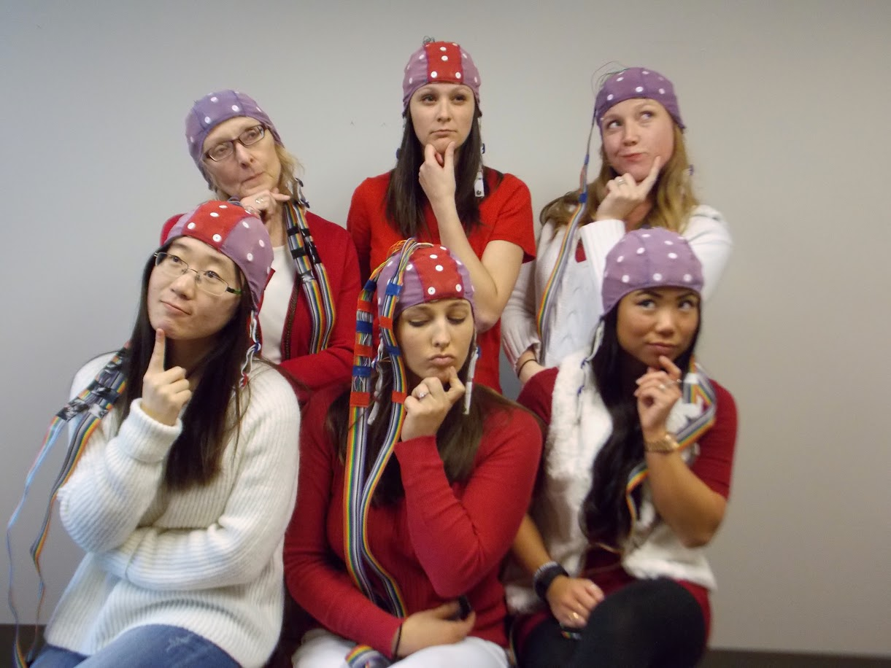

Prior Research at Virginia Tech
Developmental Science, NIH Postbaccalaureate Research Education Program (PREP) Scholar
Cognition, Affect, & Psychophysiology Lab
Advisor: Dr. Martha Ann Bell
- Behavioral & corresponding brain electrical activity (EEG) during working memory, attention, inhibitory control, emotion regulation, and temperament tasks of mothers and children
- Mathematical problem solving, arithmetic calculation, verbal fluency, reading comprehension, and mother-child dyad social interaction data collection with 9-year-olds
Prior Research at Penn State 
Advisor: Dr. Sheri Berenbaum

- Investigated the relation between synthetic hormone doses in oral contraceptives and cognitive abilities
- Researched children exposed to high levels of androgens due to congenital adrenal hyperplasia (CAH)